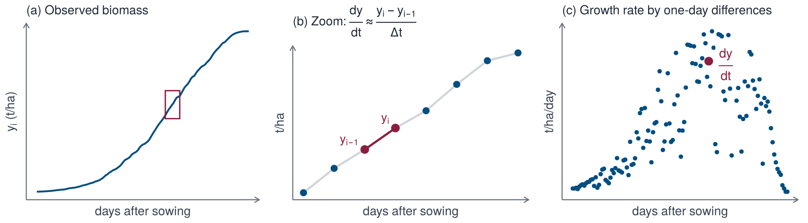

d3 = window.d3
Plot = window.Plot
weather = FileAttachment("data/interactive/weather.json").json()
contentWidth = contentWidthGenerator(Generators)
viewof year = buttons("Year", [1989, 1998, 2008], 1998)
viewof day = player("Day", d3.range(150), 60, i => weather.das0 + i)
viewof genotypes = genotypeControls([
{name: "Cool-adapted", colour: "#0089B3", optimum: 10, limit: 25},
{name: "Intermediate", colour: "#014E81", optimum: 15, limit: 32},
{name: "Warm-adapted", colour: "#8B1E3F", optimum: 21, limit: 38}])8 · Build your own model
Growth is dynamic
Crop growth responds to the environment over time. Furthermore, we know that genotypes differ in their response to the environment. The figure below shows the growth of three genotypes in three years of weather. The best way to understand the differences between genotypes is to look at their response functions, which describe how the growth rate depends on the environment. The goal of this workshop is to learn these response functions from data.
Model
Let \(\mathbf{y}(t)\) denote the state of the crop (for example biomass or leaf area index) and \(\mathbf{u}(t) = (u_1(t), \dots, u_m(t))\) the environmental drivers. The growth of the crop is described by a system of ordinary differential equations:
\[ \dot{\mathbf{y}} = \mathbf{f}(\mathbf{y}, \mathbf{u}). \]
The growth rate \(r\) of one state variable \(y\) (a component of \(\mathbf{y}\), for example biomass) is expressed as a combination of candidate functions \(\theta_1, \dots, \theta_K\) (the library),
\[ \frac{dy}{dt} = r(\mathbf{y}, \mathbf{u}) \approx \sum_{j=1}^{K} \xi_j\,\theta_j(\mathbf{y}, \mathbf{u}) = \boldsymbol{\theta}(\mathbf{y}, \mathbf{u})^\top \boldsymbol{\xi}, \]
where most coefficients \(\xi_j\) are expected to be zero (i.e., not all the candidate functions are necessary to explain the growth rate). The library contains candidate functions (inspired by crop physiology) that may be relevant to explain the growth rate. Furthermore, we can include flexible functions of the drivers, for example splines or polynomials, to capture unknown relationships. The coefficients \(\boldsymbol{\xi}\) are estimated from the data by regression.

From data to a regression problem
Let \(y_i = y(t_i)\) be the observation at the end of day \(i\), with time step \(\Delta t\) (one day). We can estimate the growth rate \(\dot y_i\) of the state \(y\) in the middle of day \(i\) by the slope of the line through the observations at the start and end of day \(i\):
\[ \dot y_i := \frac{dy}{dt}(t_{i-1/2}) \approx \frac{y_i - y_{i-1}}{\Delta t}. \]
Routines for this are available in standard packages (numpy.diff in Python, diff in R). For noisy data, more advanced methods can be used to estimate the derivative, for example smoothing splines.

Collecting all the growth rates in a vector \(\dot{\mathbf{y}}\) and the library values in a matrix \(\boldsymbol{\Theta}\) with entries \(\Theta_{ij} = \theta_j(\mathbf{y}_i, \mathbf{u}_i)\) gives
\[ \dot{\mathbf{y}} \approx \boldsymbol{\Theta}\boldsymbol{\xi}. \]
The state \(\mathbf{y}_i\) in the library is the observed state on day \(t_i\). If data are collected in several environments and for several genotypes, the growth rates and library values are stacked. With \(\theta_{i,j}^{(g, e)} = \theta_j(\mathbf{y}_i^{(g, e)}, \mathbf{u}_i^{(g, e)})\) for genotype \(g\) in environment \(e\) on day \(i\):
\[ {\small \begin{pmatrix} \dot y_1^{(1, 1)} \\ \vdots \\ \dot y_n^{(1, 1)} \\ \vdots \\ \dot y_n^{(g, e)} \end{pmatrix} \approx \begin{pmatrix} \theta_{1,1}^{(1, 1)} & \dots & \theta_{1,K}^{(1, 1)} \\ \vdots & \ddots & \vdots \\ \theta_{n,1}^{(1, 1)} & \dots & \theta_{n,K}^{(1, 1)} \\ \vdots & \ddots & \vdots \\ \theta_{n,1}^{(g, e)} & \dots & \theta_{n,K}^{(g, e)} \end{pmatrix} \begin{pmatrix} \xi_1 \\ \vdots \\ \xi_K \end{pmatrix} } \]
Note that this is a linear regression problem (recall \(\dot{\mathbf{y}} \approx \boldsymbol{\Theta}\boldsymbol{\xi}\)) that can be solved by, e.g., ordinary least squares (OLS) regression:
\[ \hat{\boldsymbol{\xi}} = \arg\min_{\boldsymbol{\xi}} \; \lVert \dot{\mathbf{y}} - \boldsymbol{\Theta}\boldsymbol{\xi} \rVert_2^2 . \]
However, any regression method can be used. We will compare several methods in the workshop.
Making predictions
Given a fitted vector of coefficients \(\hat{\boldsymbol{\xi}}\), the drivers \(\mathbf{u}(t)\) of a year and an initial state \(\mathbf{y}_0\), the state is predicted by solving the ODE with the estimated coefficients, using an ODE solver of our choice (for example scipy.integrate.solve_ivp in Python or deSolve::ode in R):
\[ \frac{dy}{dt} = \boldsymbol{\theta}(\mathbf{y}, \mathbf{u})^\top \hat{\boldsymbol{\xi}}, \qquad \mathbf{y}(t_0) = \mathbf{y}_0. \]
If the library depends on the drivers only, the solution is the integral of the predicted growth rate, \(y(t) = y_0 + \int_{t_0}^t \boldsymbol{\theta}(\mathbf{u}(s))^\top \hat{\boldsymbol{\xi}} \, ds\), as in the figure.

Dealing with multiple genotypes
We can solve the regression problem for each genotype separately, which gives a vector of coefficients \(\hat{\boldsymbol{\xi}}^{(g)}\) for each genotype \(g\):
\[ \hat{\boldsymbol{\xi}}^{(g)} = \arg\min_{\boldsymbol{\xi}} \; \lVert \dot{\mathbf{y}}^{(g)} - \boldsymbol{\Theta}^{(g)}\boldsymbol{\xi} \rVert_2^2 . \]
The environments and the library are shared, so the columns of \(\hat{\boldsymbol{\Xi}} = \bigl(\hat{\boldsymbol{\xi}}^{(1)}, \dots, \hat{\boldsymbol{\xi}}^{(G)}\bigr)\) are directly comparable: each column is the growth equation of one genotype, and the differences between columns describe how genotypes differ in their response to the drivers.
Validation
To test the predictive ability of the model, we can use leave-one-environment-out cross-validation. We calibrate the model on all but one environment, and then predict the left-out environment. This is repeated for each environment, and the predictions are compared with the observed values.

Steps
The following steps each have a defined input and output.
2Dataweather and biomass tables
3Libraryθ(y, u), Θ and ẏ
4Fittingestimate of ξ
5Validationsolution and cross-validation
6Interpretationresponse curves
7Genotypesequations per genotype
#| echo: false
source("R/page_setup.R")
source("R/pipeline.R")So far, we constructed the library of candidate terms \(\boldsymbol{\Theta}\) and the growth rates \(\dot{\mathbf{y}}\). The next step is to find the coefficients \(\boldsymbol{\xi}\) that best explain the growth rates as a linear combination of the terms:
\[ \dot{\mathbf{y}} \approx \boldsymbol{\Theta}\boldsymbol{\xi}. \]
We are free to choose any method to fit the coefficients. The methods differ in how they handle correlated terms, and in whether they produce sparse equations (with some coefficients set exactly to zero).
#| label: 04-1
#| ref.label: 04-1-run
#| eval: falsedesign = make_design(Theta, tr, "g001")#| label: 04-1-run
#| echo: false
design <- make_design(Theta, tr, "g001")Methods
Reference model. OLS does not impose any sparsity.
\[ \hat{\boldsymbol{\xi}} = \arg\min_{\boldsymbol{\xi}} \; \lVert \dot{\mathbf{y}} - \boldsymbol{\Theta}\boldsymbol{\xi} \rVert_2^2 \]
Hyperparameters: none.
R: lm.fit. Python: numpy.linalg.lstsq.
#| echo: false
#| results: asis
show_fun("fit_ols", level = 3)Shrinks the coefficients towards zero. This can help to deal with collinearity, but does not produce a sparse equation.
\[ \hat{\boldsymbol{\xi}} = \arg\min_{\boldsymbol{\xi}} \; \lVert \dot{\mathbf{y}} - \boldsymbol{\Theta}\boldsymbol{\xi} \rVert_2^2 + \lambda \lVert \boldsymbol{\xi} \rVert_2^2 \]
Hyperparameters:
- \(\lambda\): strength of the penalty; shrinks the coefficients.
Closed form, with the penalty scaled as in glmnet.
#| echo: false
#| results: asis
show_fun("fit_ridge", level = 3)The \(\ell_1\) penalty shrinks the coefficients and sets some to zero, producing a sparse equation.
\[ \hat{\boldsymbol{\xi}} = \arg\min_{\boldsymbol{\xi}} \; \lVert \dot{\mathbf{y}} - \boldsymbol{\Theta}\boldsymbol{\xi} \rVert_2^2 + \lambda \lVert \boldsymbol{\xi} \rVert_1 \]
Hyperparameters:
- \(\lambda\): strength of the penalty.
R: glmnet. Python: scikit-learn ElasticNet, with the penalty scaled as in glmnet.
#| echo: false
#| results: asis
show_fun("fit_glmnet", "fit_lasso", level = 3)A mix of ridge and lasso: sparse like the lasso, but more stable for correlated terms.
\[ \hat{\boldsymbol{\xi}} = \arg\min_{\boldsymbol{\xi}} \; \lVert \dot{\mathbf{y}} - \boldsymbol{\Theta}\boldsymbol{\xi} \rVert_2^2 + \lambda \Bigl( \tfrac{1 - \alpha}{2} \lVert \boldsymbol{\xi} \rVert_2^2 + \alpha \lVert \boldsymbol{\xi} \rVert_1 \Bigr) \]
Hyperparameters:
- \(\lambda\): strength of the penalty.
- \(\alpha\): mix ratio of the two penalties (here 0.5).
#| echo: false
#| results: asis
show_fun("fit_glmnet", "fit_enet", level = 3)The best model with exactly \(k\) terms, found by searching all subsets. This is the most expensive method, as the number of subsets grows combinatorially with the number of terms.
\[ \hat{\boldsymbol{\xi}} = \arg\min_{\lVert \boldsymbol{\xi} \rVert_0 \le k} \; \lVert \dot{\mathbf{y}} - \boldsymbol{\Theta}\boldsymbol{\xi} \rVert_2^2 \]
Algorithm:
\[ \begin{array}{ll} \textbf{for each } S \subset \{1, \dots, K\} \textbf{ with } |S| = k: & \\[2pt] \quad \hat{\boldsymbol{\xi}}_S \leftarrow \arg\min_{\boldsymbol{\xi}} \lVert \dot{\mathbf{y}} - \boldsymbol{\Theta}_S\boldsymbol{\xi} \rVert_2^2 \\[2pt] \quad \mathrm{RSS}(S) \leftarrow \lVert \dot{\mathbf{y}} - \boldsymbol{\Theta}_S\hat{\boldsymbol{\xi}}_S \rVert_2^2 & \\[2pt] \textbf{return } \hat{\boldsymbol{\xi}}_{S^*} \text{ with } S^* = \arg\min_{S} \mathrm{RSS}(S) \end{array} \]
Hyperparameters:
- \(k\): number of terms that are kept.
#| echo: false
#| results: asis
show_fun("fit_subset", level = 3)A greedy alternative to best subset: start with all terms and repeatedly remove the one that increases the residual error least.
\[ \begin{array}{ll} S \leftarrow \{1, \dots, K\} \\[2pt] \textbf{while } |S| > k: & \\[2pt] \quad \Delta_j \leftarrow \mathrm{RSS}(S \setminus \{j\}) - \mathrm{RSS}(S) \quad \text{for each } j \in S \\[2pt] \quad S \leftarrow S \setminus \{j^*\}, \quad j^* = \arg\min_{j \in S} \Delta_j \\[2pt] \textbf{return } \hat{\boldsymbol{\xi}}_S \end{array} \]
Hyperparameters:
- \(k\): number of terms that are kept.
#| echo: false
#| results: asis
show_fun("fit_subset", level = 3)Sequential thresholded least squares, the algorithm of the original SINDy method.
\[ \begin{array}{ll} S \leftarrow \{1, \dots, K\} \\[2pt] \textbf{repeat:} & \\[2pt] \quad \hat{\boldsymbol{\xi}}_S \leftarrow \arg\min_{\boldsymbol{\xi}} \lVert \dot{\mathbf{y}} - \boldsymbol{\Theta}_S\boldsymbol{\xi} \rVert_2^2 \\[2pt] \quad S' \leftarrow \bigl\{ j \in S : |\hat{\xi}_j|\, s_j \ge \tau \bigr\}, \quad s_j = \mathrm{sd}(\boldsymbol{\Theta}_j) / \mathrm{sd}\bigl(\dot{\mathbf{y}}\bigr) \\[2pt] \quad \textbf{if } S' = S \text{ or } S' = \emptyset \textbf{ then stop, else } S \leftarrow S' & \\[2pt] \textbf{return } \hat{\boldsymbol{\xi}}_S \end{array} \]
Hyperparameters:
- \(\tau\): threshold on the scaled coefficient \(|\hat{\xi}_j|\,s_j\).
#| echo: false
#| results: asis
show_fun("fit_stlsq", level = 3)Comparison
The methods fitted to the same data:
#| label: 04-2
#| ref.label: 04-2-run
#| eval: falsefits = pd.DataFrame({name: fit(design.Theta, design.dy)
for name, fit in fit_methods.items()},
index=["1"] + design.terms)
print(fits.round(3))#| label: 04-2-run
#| echo: false
fits <- sapply(fit_methods, function(fit) fit(design$Theta, design$dy))
round(fits, 3)We visualise the coefficients of the terms for each method on the same scale.
#| label: 04-3
#| ref.label: 04-3-run
#| eval: falsesize = design.Theta.std(axis=0, ddof=1) / design.dy.std(ddof=1)
effect = fits.iloc[1:].mul(size, axis=0)
fig, axes = plt.subplots(effect.shape[1], 1, sharex=True, sharey=True,
figsize=(6.2, 6.2))
for ax, (name, column) in zip(axes, effect.items()):
ax.bar(column.index, column, color=np.where(column > 0, BLUE, BURGUNDY))
ax.axhline(0, color="black", lw=0.8)
ax.set_title(name, fontsize=8, loc="left")
axes[-1].tick_params(axis="x", rotation=90)
fig.supylabel("scaled coefficient")
fig.tight_layout()#| label: 04-3-run
#| echo: false
#| fig-height: 6.2
#| fig-width: 6.2
#| out-width: 600px
size <- apply(design$Theta, 2, sd) / sd(design$dy)
effect <- fits[-1, ] * size
effects <- data.frame(
term = factor(rownames(effect), rownames(effect)),
method = factor(
rep(colnames(effect), each = nrow(effect)),
colnames(effect)
),
effect = as.vector(effect)
)
effects <- effects[effects$effect != 0, ]
ggplot(effects, aes(term, effect, fill = effect > 0)) +
geom_col(width = 0.7) +
geom_hline(yintercept = 0, linewidth = 0.3) +
scale_fill_manual(
values = c(
`TRUE` = dgxe[["blue"]],
`FALSE` = dgxe[["burgundy"]]
),
guide = "none"
) +
scale_x_discrete(drop = FALSE) +
scale_y_continuous(breaks = c(-0.5, 0, 0.5)) +
facet_wrap(~method, ncol = 1) +
labs(x = NULL, y = "scaled coefficient") +
theme_dgxe() +
theme(
strip.text = element_text(size = 8),
axis.text.x = element_text(
size = 7, angle = 90, hjust = 1,
vjust = 0.5
)
)Due to the different ways the methods handle correlated terms, they produce different equations.
Exploring a method
Here we compare some of the approaches. Switch genotypes on and off to compare their coefficients (top); the lower left panel shows the held-out error for all settings, as the mean over 20 genotypes, and the lower right panel the held-out trajectories of the selected genotypes for the current setting.
//| echo: false
d3 = window.d3
Plot = window.Plot
hyper = FileAttachment("data/interactive/hyper.json").json()
contentWidth = contentWidthGenerator(Generators)
contrast = hyper.trajectories.genotypes
shades = ["#8B1E3F", "#014E81", "#00A6D6", "#6D8B1E", "#6B7280"]
viewof method = select("Method", Object.keys(hyper.methods), "STLSQ")
spec = hyper.methods[method]
viewof shown = toggles("Genotypes", contrast, shades)
viewof step = slider(spec.param, spec.values, Math.floor(spec.values.length / 2), v => (+v).toPrecision(2))
viewof trajYear = buttons("Year of the predicted trajectories", hyper.trajectories.years.map(String), "1998")//| echo: false
{
const all = Object.values(hyper.methods);
const half = Math.floor((contentWidth - 28) / 2);
const reach = d3.max(all.flatMap(m => m.effect.flat(2).map(Math.abs)));
const rmse = d3.extent(all.flatMap(m => m.rmse));
const band = 5, n = shown.length;
const key = (term, name) => term + "|" + name;
const domain = hyper.terms.flatMap(term => [...shown.map(name => key(term, name)), key(term, "")]);
const middle = hyper.terms.map(term => key(term, shown[Math.floor(n / 2)]));
const rows = shown.flatMap(name => {
const g = hyper.genotypes.indexOf(name);
return hyper.terms.map((term, i) => ({name, band: key(term, name), effect: spec.effect[step][g][i]}));
});
const coefficients = Plot.plot({
width: 56 + band * domain.length, height: 250, marginLeft: 56, marginBottom: 60,
y: {domain: [-reach, reach], label: "scaled coefficient", ticks: 4},
x: {domain, ticks: middle, tickFormat: d => d.split("|")[0], tickRotate: -90, label: null, padding: 0},
color: {domain: contrast, range: shades},
marks: [Plot.barY(rows, {x: "band", y: "effect", fill: "name"}), Plot.ruleY([0])]
});
const curve = spec.values.map((value, i) => ({value, rmse: spec.rmse[i]}));
const scale = spec.param === "terms" ? "linear" : "log";
const error = Plot.plot({
width: half, height: 220, marginLeft: 45,
x: {type: scale, label: spec.param, tickFormat: ".2~g"},
y: {domain: [rmse[0] - 0.01, rmse[1] + 0.01], label: "held-out RMSE (t/ha)"},
marks: [Plot.line(curve, {x: "value", y: "rmse", stroke: "#9CA3AF", clip: true}),
Plot.dot(curve, {x: "value", y: "rmse", fill: "#9CA3AF", r: 3, clip: true}),
Plot.dot([curve[step]], {x: "value", y: "rmse", fill: "#8B1E3F", r: 6, clip: true})]
});
const tr = hyper.trajectories, y = tr.years.indexOf(+trajYear);
const lines = shown.flatMap(name => {
const g = tr.genotypes.indexOf(name);
const x = (_, k) => tr.das0 + tr.step * k;
return [["APSIM", tr.observed[g][y]], ["model", spec.pred[step][g][y]]].flatMap(([source, values]) =>
values.map((value, k) => ({name, source, das: x(null, k), biomass: value})));
});
const trajectories = Plot.plot({
width: half, height: 220, marginLeft: 45,
x: {label: "days after sowing"},
y: {domain: [0, 18], label: "biomass (t/ha)"},
color: {domain: contrast, range: shades},
marks: [
Plot.line(lines.filter(d => d.source === "APSIM" && d.biomass !== null),
{x: "das", y: "biomass", z: "name", stroke: "name", strokeWidth: 4, strokeOpacity: 0.3}),
Plot.line(lines.filter(d => d.source === "model" && d.biomass !== null),
{x: "das", y: "biomass", z: "name", stroke: "name", strokeWidth: 1.4, clip: true})]
});
return html`<div><div class="scroll-x">${coefficients}</div>
<div style="display:flex;flex-wrap:wrap;gap:1rem;align-items:flex-start">${error}${trajectories}</div>
<p class="interactive-note" style="margin-top:0.75rem">Right: held-out prediction for year ${trajYear} (thin lines) against APSIM (thick lines), with the current setting of the hyperparameter.</p></div>`;
}//| echo: false
shown.length ? html`<div>
<p class="interactive-note">Fitted equation for genotype ${shown[0]} (${method}, ${spec.param} ${(+spec.values[step]).toPrecision(2)}, ${spec.nterms[step][hyper.genotypes.indexOf(shown[0])]} terms kept); the terms are functions of the standardised drivers.</p>
${Equation.element(Equation.latex(hyper.terms, spec.intercept[step][hyper.genotypes.indexOf(shown[0])], spec.coef[step][hyper.genotypes.indexOf(shown[0])]))}</div>` : html``#| echo: false
source("R/page_setup.R")
source("R/pipeline.R")Solution
The fitted coefficients \(\hat{\boldsymbol{\xi}}\) can be used to predict the biomass trajectory of a genotype in a year, given the drivers of that year:
\[\begin{align*} \dfrac{d\hat y}{dt} &= \boldsymbol{\theta}\bigl(\mathbf{u}(t)\bigr)^\top \hat{\boldsymbol{\xi}}, \quad \hat y(t_0) = y_0 \end{align*}\]
This equation can be solved with a standard ODE solver: deSolve::ode (LSODA) in R and scipy.integrate.solve_ivp (LSODA) in Python.
#| echo: false
#| results: asis
show_fun("simulate")If a library depends on the state, terms(y, u) is evaluated along the solution; by default the library depends on the drivers only.
Leave-one-year-out cross-validation
Each genotype has trajectories in the years \(E\). A year \(e\) is predicted by a model that has not seen it:
\[ \begin{array}{ll} \textbf{for each genotype } g, \textbf{ for each year } e \in E: & \\[2pt] \quad \hat{\boldsymbol{\xi}}^{(-e)} \leftarrow \texttt{fit}\bigl(\boldsymbol{\Theta}^{(-e)},\, \dot{\mathbf{y}}^{(-e)}\bigr) & \text{fit on the other years} \\[2pt] \quad \bar{y}_0^{(-e)} \leftarrow \tfrac{1}{|E|-1} \textstyle\sum_{e' \ne e} y_0^{(e')} & \text{mean initial biomass} \\[2pt] \quad \dfrac{d\hat y}{dt} = \boldsymbol{\theta}\bigl(\mathbf{u}^{(e)}(t)\bigr)^\top \hat{\boldsymbol{\xi}}^{(-e)}, \quad \hat y(t_0) = \bar{y}_0^{(-e)} & \text{predict year } e \text{ from its drivers} \end{array} \]
Only the drivers of the left-out year enter the prediction. The error is the root-mean-square error (RMSE, t/ha) over whole trajectories and at maturity.
#| echo: false
#| results: asis
show_fun("cross_validate", "evaluate")The sparse model (STLSQ) for all 199 genotypes:
#| label: 05-1
#| ref.label: 05-1-show
#| eval: falseP = cross_validate(Theta, tr, fit_stlsq)
print({k: round(float(v), 3) for k, v in evaluate(P, tr).items()})#| label: 05-1-show
#| eval: false
#| include: false
P <- cross_validate(Theta, tr, fit_stlsq)
round(evaluate(P, tr), 3)#| label: 05-1-run
#| echo: false
P <- cached("cv_stlsq.rds", cross_validate(Theta, tr, fit_stlsq))
round(evaluate(P, tr), 3)Predicted trajectories
Held-out predictions of the sparse model, for genotypes spread over the ranking of final biomass and for selected years. Thick lines: APSIM; thin lines: model. Switch genotypes and years on and off. The right panel shows the growth rate of the same curves, estimated by one-day differences.
//| echo: false
d3 = window.d3
Plot = window.Plot
traj = FileAttachment("data/interactive/trajectories.json").json()
contentWidth = contentWidthGenerator(Generators)
shades = ["#8B1E3F", "#00A6D6", "#014E81", "#6D8B1E", "#6B7280"]
viewof genos = toggles("Genotypes", traj.genotypes, shades, [traj.genotypes[0], traj.genotypes[2], traj.genotypes[4]])
viewof years = toggles("Years", [1983, 1989, 1998, 2008], ["#374151", "#374151", "#374151", "#374151"], [1989, 1998, 2008])//| echo: false
{
const rows = genos.flatMap(name => years.flatMap(year => {
const g = traj.genotypes.indexOf(name), s = traj.years.indexOf(year);
return ["observed", "model"].flatMap(source => traj[source][g][s].map((y, i, a) => ({
name, year, source, das: traj.das0 + i, y, rate: i > 0 ? a[i] - a[i - 1] : null})));
}));
const panel = (key, label, domain) => Plot.plot({
width: Math.floor((contentWidth - 20) / 2), height: 70 + 120 * years.length, marginLeft: 42, marginRight: 8,
style: {fontSize: "10px"},
x: {label: "days after sowing"},
y: {label, domain},
fy: {label: null, domain: years, tickFormat: d => d},
color: {domain: traj.genotypes, range: shades},
marks: [
Plot.line(rows.filter(d => d.source === "observed" && d[key] !== null),
{x: "das", y: key, fy: "year", z: "name", stroke: "name", strokeWidth: 4, strokeOpacity: 0.3}),
Plot.line(rows.filter(d => d.source === "model" && d[key] !== null),
{x: "das", y: key, fy: "year", z: "name", stroke: "name", strokeWidth: 1.4})
]
});
return html`<div style="display:flex;flex-wrap:wrap;gap:0.5rem">${panel("y", "biomass (t/ha)", [0, 18])}${panel("rate", "growth rate (t/ha/day)", [0, 0.4])}</div>`;
}Predicted against APSIM biomass at maturity
Final biomass of all genotype-year pairs, coloured by year:
#| label: 05-3
#| ref.label: 05-3-run
#| eval: falsefrom matplotlib.colors import LinearSegmentedColormap
g, s = np.indices(tr.nend.shape)
obs, pred = tr.Y[g, s, tr.nend].ravel(), P[g, s, tr.nend].ravel()
year = np.tile(tr.years, len(tr.genotypes))
rmse = np.sqrt(np.mean((obs - pred) ** 2))
colours = LinearSegmentedColormap.from_list("dgxe", [BLUE, CYAN, BURGUNDY])
fig, ax = plt.subplots(figsize=(4.6, 4))
ax.plot([obs.min(), obs.max()], [obs.min(), obs.max()], color="#9CA3AF", lw=0.8)
points = ax.scatter(obs, pred, c=year, s=4, alpha=0.5, cmap=colours,
linewidths=0)
ax.text(0.04, 0.95, f"RMSE {rmse:.2f} t/ha", transform=ax.transAxes, va="top")
ax.set_aspect("equal")
ax.set_xlabel("APSIM biomass at maturity (t/ha)")
ax.set_ylabel("predicted biomass (t/ha)")
fig.colorbar(points, label="year", shrink=0.8)
fig.tight_layout()#| label: 05-3-run
#| echo: false
#| fig-height: 4
#| fig-width: 5
last <- cbind(
as.vector(row(tr$nend)), as.vector(col(tr$nend)),
as.vector(tr$nend) + 1
)
maturity <- data.frame(
obs = tr$Y[last], pred = P[last],
year = tr$years[as.vector(col(tr$nend))]
)
rmse <- sqrt(mean((maturity$obs - maturity$pred)^2))
ggplot(maturity, aes(obs, pred, colour = year)) +
geom_abline(colour = dgxe[["grey"]], linewidth = 0.4) +
geom_point(size = 0.7, alpha = 0.5) +
annotate("text",
x = min(maturity$obs), y = max(maturity$pred), hjust = 0, vjust = 1,
size = 3.4, label = sprintf("RMSE %.2f t/ha", rmse)
) +
scale_colour_gradientn(
colours = c(
dgxe[["blue"]], dgxe[["cyan"]],
dgxe[["burgundy"]]
),
name = "year"
) +
coord_equal() +
labs(
x = "APSIM biomass at maturity (t/ha)",
y = "predicted biomass (t/ha)"
) +
theme_dgxe() +
theme(legend.position = "right")Comparison of fitting methods
All methods of step 4 are evaluated in the same way:
#| label: 05-6
#| ref.label: 05-6-show
#| eval: falsescores = pd.DataFrame({name: evaluate(cross_validate(Theta, tr, fit), tr)
for name, fit in fit_methods.items()}).T
print(scores.round(3))#| label: 05-6-show
#| eval: false
#| include: false
scores <- t(sapply(fit_methods, function(fit) {
evaluate(cross_validate(Theta, tr, fit), tr)
}))
round(scores, 3)#| label: 05-6-run
#| echo: false
scores <- cached("cv_methods.rds", t(sapply(fit_methods, function(fit) {
evaluate(cross_validate(Theta, tr, fit), tr)
})))
round(scores, 3)The methods are close to each other. The sparse models use fewer terms for a similar error.
Number of terms
For a library that also contains products of pairs of drivers (pairs = TRUE, 108 terms), the held-out error of backward elimination (every twentieth genotype) as a function of the number of terms, for every \(k\) from 1 to 108, is:
#| label: 05-7
#| ref.label: 05-7-show
#| eval: falseTheta2 = make_library(drv, pairs=True)
genotypes = tr.genotypes[::20]
ks = range(1, 109)
def rmse_for(k):
def fit(Theta, dy):
return fit_subset(Theta, dy, k, "backward")
return evaluate(cross_validate(Theta2, tr, fit, genotypes),
tr)["trajectory_rmse"]
by_k = pd.DataFrame({"k": ks, "rmse": [rmse_for(k) for k in ks]})#| label: 05-7-show
#| eval: false
#| include: false
Theta2 <- make_library(drv, pairs = TRUE)
genotypes <- tr$genotypes[seq(1, 199, by = 20)]
ks <- 1:108
by_k <- data.frame(k = ks, rmse = sapply(ks, function(k) {
fit <- function(Theta, dy) fit_subset(Theta, dy, k, "backward")
evaluate(cross_validate(Theta2, tr, fit, genotypes), tr)[[1]]
}))#| label: 05-7-run
#| echo: false
Theta2 <- make_library(drv, pairs = TRUE)
genotypes <- tr$genotypes[seq(1, 199, by = 20)]
ks <- 1:108
by_k <- cached("rmse_vs_k.rds", data.frame(k = ks, rmse = sapply(ks, function(k) {
fit <- function(Theta, dy) fit_subset(Theta, dy, k, "backward")
evaluate(cross_validate(Theta2, tr, fit, genotypes), tr)[[1]]
})))#| label: 05-8
#| ref.label: 05-8-run
#| eval: falsefig, ax = plt.subplots(figsize=(5, 2.8))
ax.plot(by_k["k"], by_k["rmse"], color=BLUE)
ax.set_xlabel("number of terms (108-term library)")
ax.set_ylabel("held-out trajectory RMSE (t/ha)")
fig.tight_layout()#| label: 05-8-run
#| echo: false
#| fig-height: 2.8
#| fig-width: 5
ggplot(by_k, aes(k, rmse)) +
geom_line(colour = dgxe[["blue"]], linewidth = 0.8) +
geom_point(colour = dgxe[["blue"]], size = 0.8) +
labs(
x = "number of terms (108-term library)",
y = "held-out trajectory RMSE (t/ha)"
) +
theme_dgxe()This page repeats steps 2 to 5 on one genotype, with every choice under your control and the object it produces shown directly below it: drivers and states, the library, the design matrix, the fit, and the check on years that were left out. The calculations run in the browser and follow the functions of the previous steps. Changing a choice updates all later steps; the code for the final model is at the end of the page.
//| echo: false
d3 = window.d3
Plot = window.Plot
builder = FileAttachment("data/interactive/builder.json").json()
contentWidth = contentWidthGenerator(Generators)
palette = ["#014E81", "#00A6D6", "#8B1E3F", "#469C2A", "#6F1D77", "#EF60A3", "#00A390", "#6B7280"]
highlights = [1983, 1998, 2008]
highlightColours = ["#8B1E3F", "#014E81", "#00A6D6"]
info = ({
biomass: {label: "biomass", short: "B", unit: "t/ha", series: builder.Y, peak: false},
LAI: {label: "LAI", short: "LAI", unit: "m²/m²", series: builder.L, peak: true}})
lhs = state => `\\frac{d\\,\\mathrm{${info[state].short}}}{dt}`Step 1 · States and drivers
The data of one genotype are used: its biomass and LAI trajectories in 31 years and the weather of those years. Choose the modelled states and the drivers that may enter the library. With one modelled state \(y\) the model is \(\dot{y} = \boldsymbol{\xi}^{\top}\boldsymbol{\theta}(\mathbf{u})\) with weather drivers \(\mathbf{u}\). With state feedback the modelled states enter the library as well, \(\dot{y}_k = \boldsymbol{\xi}_k^{\top}\boldsymbol{\theta}(\mathbf{u}, y_1, y_2)\), and with both states modelled the two equations form a coupled system.
//| echo: false
viewof genotype = select("Genotype", builder.genotypes, builder.genotypes[0])
viewof stateName = select("Modelled states", ["biomass", "LAI", "both (coupled)"], "biomass")
stateList = stateName === "both (coupled)" ? ["biomass", "LAI"] : [stateName === "LAI" ? "LAI" : "biomass"]
traitKey = stateList[0] === "LAI" ? "biomass" : "LAI"
viewof feedbackChoice = buttons("State feedback on the right-hand side", ["no", "yes"], "no")
feedback = feedbackChoice === "yes"
viewof chosen = toggles("Drivers", builder.drivers, builder.drivers.map(() => "#014E81"), builder.drivers)
viewof measured = buttons(stateList.length > 1 ? "Measured input (one modelled state only)" : traitKey === "LAI" ? "Measured LAI as input" : "Measured biomass as input", ["no", "yes"], "no")
traitName = measured === "yes" && stateList.length === 1 ? traitKey : null
drivers = traitName ? [...chosen, traitName] : chosen
g = builder.genotypes.indexOf(genotype)The drivers are standardised (mean 0, standard deviation 1 over all years). Grey: all 31 years; coloured: 1983, 1998 and 2008. Below the drivers, the growth rate that the model has to reproduce, estimated by one-day differences.
//| echo: false
{
const cell = Math.floor((contentWidth - 60) / 4);
const panel = (label, rows, unit) => html`<figure style="margin:0 0 .3rem 0"><div class="interactive-note" style="margin:0">${label}</div>${
Plot.plot({
width: cell, height: 100, marginLeft: 34, marginRight: 4, marginTop: 6, marginBottom: 28,
style: {fontSize: "9px"},
x: {label: null, ticks: 4}, y: {label: null, ticks: 4, grid: false},
color: {domain: highlights, range: highlightColours},
marks: [
Plot.line(rows.filter(d => !highlights.includes(d.year)), {x: "das", y: "v", z: "year", stroke: "#D1D5DB", strokeWidth: 0.6}),
Plot.line(rows.filter(d => highlights.includes(d.year)), {x: "das", y: "v", z: "year", stroke: "year", strokeWidth: 1.2})]
})}</figure>`;
const D = builder.U[0].length;
const drv = chosen.map(name => {
const k = builder.drivers.indexOf(name);
const rows = builder.years.flatMap((yr, y) => Array.from({length: D}, (_, d) => ({year: yr, das: builder.das0 + d, v: builder.U[y][d][k]})));
return panel(name, rows);
});
const rate = stateList.map(state => {
const {label, unit, series} = info[state];
const rows = builder.years.flatMap((yr, y) => {
const rec = series[g][y], n = builder.nend[g][y];
return Array.from({length: n}, (_, i) => ({year: yr, das: builder.das0 + i + 0.5, v: rec[i + 1] - rec[i]}));
});
return panel(`growth rate of ${label} (${unit}/day)`, rows);
});
return html`<div style="display:flex;flex-wrap:wrap;gap:.2rem .9rem">${drv}</div>
<div style="display:flex;flex-wrap:wrap;gap:.2rem .9rem;margin-top:.4rem">${rate}</div>`;
}Step 2 · Library
The library \(\boldsymbol{\theta}\) contains each driver raised to the powers \(1, \dots, p\), optionally products of pairs of powers whose exponents add up to at most the degree (so products need a degree of at least 2), and further terms that you define. A richer library can describe more, but its columns become correlated and the fit has more freedom to follow noise.
//| echo: false
viewof degree = buttons("Powers up to degree", [1, 2, 3], 3)
viewof products = buttons("Products of pairs", ["no", "yes"], "no")
examples = [
{label: "heat", line: "heat = max(Tmax - 30, 0)"},
{label: "frost", line: "frost = max(2 - Tmin, 0)"},
{label: "optimum", line: "opt = exp(-(Tmean - 20)^2 / (2 * 5^2))"},
{label: "log rain", line: "lograin = log(1 + Rain)"},
{label: "rain, 7 days", line: "rain7 = roll(Rain, 7)"},
{label: "cumulative RAD", line: "cumRAD = cum(RAD)"},
{label: "vapour deficit", line: "vpd = VPD"},
{label: "RAD / DL", line: "ratio = RAD / DL"},
{label: "temperature × water", line: "TW = Tmean * RAW"},
{label: "lagged Tmax", line: "lag3 = lag(Tmax, 3)"},
{label: "yearly cycle", line: "cycle = sin(2 * pi * das / 365)"},
{label: "canopy light (measured LAI)", line: "canopy = LAI * RAD"},
{label: "LAI, 5 days (measured LAI)", line: "LAI5 = roll(LAI, 5)"}]
viewof extraText = expressions("Extra terms", examples)
parsed = Builder.parseExtras(extraText, traitName ? [traitName] : [])
extras = parsed.terms
html`${parsed.errors.map(e => html`<p class="interactive-note">Line ${e.line}: ${e.message}</p>`)}`Extra terms are functions of the raw weather. Each line adds one term to the library, standardised like the drivers: write name = expression, or click an example. The variables are Tmin, Tmax, Rain, RAD, VP, DL, TT, RAW, Tmean, VPD (vapour pressure deficit, from Tmax and VP), das (days after sowing) and, with the measured input switched on, LAI or biomass. The operators are + - * / ^, and the functions are exp, log, sqrt, abs, sin, cos, tan, tanh, min and max (elementwise), roll(x, k) (mean of the last k days), cum(x) and lag(x, k).
//| echo: false
library = Builder.termSpecs(drivers, degree, products === "yes")
stateTerms = feedback ? Builder.stateSpecs(stateList, library, degree, products === "yes").names : []
K = library.names.length + extras.length + stateTerms.length
baseConfig = ({states: stateList, feedback, drivers, degree, pairs: products === "yes", extras, trait: traitName})
corr = {
try { return Builder.correlations(builder, g, baseConfig); }
catch (e) { return {error: e.message}; }
}//| echo: false
corr.error ? html`<p class="interactive-note">${corr.error}</p>` : html`<p class="interactive-note">The library has ${K} terms: ${library.names.length} from ${drivers.length} drivers${extras.length ? `, ${extras.length} extra` : ""}${feedback ? `, ${stateTerms.length} of the states` : ""}. The heat map shows the correlation between its columns over all days of the genotype (blue positive, burgundy negative).</p>`//| echo: false
{
if (corr.error) return html``;
const {names, K: n, corr: R} = corr;
const cells = [];
for (let i = 0; i < n; i++) for (let j = 0; j < n; j++) cells.push({i: names[i], j: names[j], r: R[i * n + j]});
const labels = n <= 40;
const heat = Plot.plot({
width: 460, height: 460, marginLeft: labels ? 70 : 10, marginBottom: labels ? 70 : 10, marginTop: 6, marginRight: 6,
style: {fontSize: "8px"},
x: {domain: names, label: null, axis: labels ? "bottom" : null, tickRotate: -90, tickSize: 0},
y: {domain: names, label: null, axis: labels ? "left" : null, tickSize: 0, reverse: true},
color: {type: "diverging", domain: [-1, 1], range: ["#8B1E3F", "#FFFFFF", "#014E81"], legend: false},
marks: [Plot.cell(cells, {x: "j", y: "i", fill: "r"})]
});
const pairs = [];
for (let i = 0; i < n; i++) for (let j = i + 1; j < n; j++) pairs.push({a: names[i], b: names[j], r: R[i * n + j]});
pairs.sort((u, v) => Math.abs(v.r) - Math.abs(u.r));
const high = pairs.filter(d => Math.abs(d.r) > 0.9).length;
return html`<div style="display:flex;flex-wrap:wrap;gap:1rem;align-items:flex-start">${heat}
<div class="interactive-note" style="max-width:20rem">
<p><b>${high}</b> of ${pairs.length} pairs of terms have |correlation| above 0.9.</p>
<p>Most correlated pairs:</p>
<ul style="margin-top:0">${pairs.slice(0, 5).map(d => html`<li>${d.a} and ${d.b}: ${d.r.toFixed(2)}</li>`)}</ul>
<p>Powers of one driver are correlated by construction. Strongly correlated columns make the least-squares coefficients sensitive to small changes in the data, which is why regularisation and sparse methods are used in step 4.</p></div></div>`;
}Step 3 · Design matrix
Each day of each year gives one equation \(\dot y_i = \sum_j \Theta_{ij}\,\xi_j\). The target \(\dot y_i = y_i - y_{i-1}\) is the biomass (or LAI) gained during day \(i\); row \(i\) of \(\boldsymbol{\Theta}\) is the library of the weather of day \(i\). The table shows three consecutive days of one year (the middle row is day \(i\)), the first six columns, and the growth rate.
//| echo: false
viewof designYear = slider("Year", builder.years, builder.years.indexOf(1998))
viewof designDay = slider("Day i", d3.range(2, 138), 70, v => `${v}`)//| echo: false
{
if (corr.error) return html``;
const day = designDay + 2;
const t = Builder.designRows(builder, g, baseConfig, designYear, day - 1, 3);
const {unit} = info[stateList[0]];
const shown = Math.min(6, t.names.length), f = v => v.toFixed(2);
const S = builder.years.length;
const n = d3.sum(builder.nend[g]);
return html`<div style="overflow-x:auto"><table class="dgxe-table">
<thead><tr><th>day</th><th>y<sub>i−1</sub></th><th>y<sub>i</sub></th><th>ẏ<sub>i</sub> (${unit}/day)</th>${t.names.slice(0, shown).map(c => html`<th>${c}</th>`)}${t.names.length > shown ? html`<th>…</th>` : ""}</tr></thead>
<tbody>${t.rows.map(r => html`<tr class=${r.day === day ? "active" : ""}><td>${r.day}</td><td>${f(r.y0)}</td><td>${f(r.y1)}</td><td>${r.dy.toFixed(3)}</td>${r.x.slice(0, shown).map(v => html`<td>${f(v)}</td>`)}${t.names.length > shown ? html`<td>…</td>` : ""}</tr>`)}</tbody></table></div>
<p class="interactive-note">Genotype ${genotype}, year ${builder.years[designYear]}. For the genotype, <b>Θ</b> has ${n} rows (all days of ${S} years except the first record of each year) and ${K} columns${stateList.length > 1 || feedback ? "; the table shows the weather terms of the first state's equation" : ""}.</p>`;
}The bars show how strongly each library column correlates with the growth rate (the 15 strongest), and the scatter plot shows the growth rate against one chosen column.
//| echo: false
viewof termChoice = corr.error ? Object.assign(html`<div></div>`, {value: null}) : select("Term", corr.names, corr.names[d3.maxIndex(corr.withY[0], Math.abs)])//| echo: false
{
if (corr.error || !corr.names.includes(termChoice)) return html``;
const j = corr.names.indexOf(termChoice);
const {label, unit} = info[stateList[0]];
const ranked = corr.names.map((name, i) => ({name, r: corr.withY[0][i]})).sort((a, b) => Math.abs(b.r) - Math.abs(a.r)).slice(0, 15);
const bars = Plot.plot({
width: Math.floor(0.45 * (contentWidth - 30)), height: 40 + 16 * ranked.length, marginLeft: 70,
x: {domain: [-1, 1], label: `correlation with growth rate of ${label}`},
y: {domain: ranked.map(d => d.name), label: null},
marks: [Plot.barX(ranked, {x: "r", y: "name", fill: d => d.r > 0 ? "#014E81" : "#8B1E3F"}), Plot.ruleX([0])]
});
const pts = Builder.designColumn(builder, g, baseConfig, j);
const scatter = Plot.plot({
width: contentWidth - 30 - Math.floor(0.45 * (contentWidth - 30)), height: 40 + 16 * ranked.length, marginLeft: 50,
x: {label: `${termChoice} (library column)`}, y: {label: `growth rate (${unit}/day)`},
marks: [Plot.dot(pts.filter(d => d.year !== designYear), {x: "x", y: "dy", r: 1.4, fill: "#9CA3AF", fillOpacity: 0.4}),
Plot.dot(pts.filter(d => d.year === designYear), {x: "x", y: "dy", r: 2.4, fill: "#8B1E3F"})]
});
return html`<div style="display:flex;flex-wrap:wrap;gap:1rem">${bars}${scatter}</div>
<p class="interactive-note">Grey: all days of all years; red: the year chosen above. The regression looks for a combination of such columns that follows the growth rate.</p>`;
}Step 4 · Fit
The coefficients \(\boldsymbol{\xi}\) are estimated by regression of \(\dot{\mathbf{y}}\) on \(\boldsymbol{\Theta}\). The methods differ in how they limit the freedom of the fit: ridge shrinks all coefficients, lasso and STLSQ remove terms, backward elimination and best subset keep a fixed number of terms. Choose a method and its parameter.
//| echo: false
catalogue = Builder.methods(K)
available = Object.keys(catalogue).filter(m => catalogue[m].values.length > 0)
viewof method = select("Method", available, "STLSQ")
spec = catalogue[method]
viewof step = spec.param
? slider(spec.param, spec.values, Math.min(Math.floor(spec.values.length / 2), spec.values.length - 1), v => (+v).toPrecision(2))
: Object.assign(html`<div></div>`, {value: 0})//| echo: false
result = {
try {
return Builder.runModel(builder, g, {...baseConfig, method, value: spec.values[step]});
} catch (e) {
return {error: e.message};
}
}//| echo: false
result.error ? html`<p class="interactive-note">${result.error}</p>` : html`<div>
<p class="interactive-note">${K} terms in the library${feedback ? `, of which ${stateTerms.length} of the states` : ""}. ${result.equations.map(eq => `${info[eq.state].label}: ${eq.nterms} terms retained, held-out RMSE ${eq.rmse.toFixed(3)} ${info[eq.state].unit}, at maturity ${eq.maturityRmse.toFixed(3)}`).join("; ")}. (${result.ms.toFixed(0)} ms)</p>
${result.diverged ? html`<p class="interactive-note">${result.diverged} of ${builder.years.length} held-out years diverged and are left out of the error.</p>` : ""}</div>`//| echo: false
result.error ? html`` : html`<div>
${result.equations.map(eq => Equation.element(Equation.latex(eq.terms, eq.intercept, eq.coef, lhs(eq.state))))}
<p class="interactive-note">The fit for all years of genotype ${genotype}. The terms are functions of the standardised drivers${traitName ? `, with the measured ${traitName === "LAI" ? "LAI" : "biomass"} as an additional driver` : ""}${result.scales.length ? `; the states are standardised as (${result.scales.map(d => `${info[d.state].short} − ${d.center.toPrecision(3)}) / ${d.scale.toPrecision(3)}`).join(", (")}` : ""}.</p></div>`//| echo: false
{
if (result.error) return html``;
const plots = result.equations.map(eq => {
const {label} = info[eq.state];
const kept = eq.terms.map((term, i) => ({term, effect: eq.scaled[i]})).filter(d => d.effect !== 0);
const reach = d3.max(kept, d => Math.abs(d.effect)) || 1;
return html`<div>${result.equations.length > 1 ? html`<h4>${label}</h4>` : ""}<div class="scroll-x">${Plot.plot({
width: Math.max(contentWidth, 70 + 16 * kept.length), height: 260, marginLeft: 56, marginBottom: 70,
y: {domain: [-reach, reach], label: `scaled coefficient, ${label}`},
x: {domain: kept.map(d => d.term), tickRotate: -90, label: null},
marks: [Plot.barY(kept, {x: "term", y: "effect", fill: d => d.effect > 0 ? "#014E81" : "#8B1E3F"}), Plot.ruleY([0])]
})}</div></div>`;
});
return html`<div>${plots}<p class="interactive-note">Coefficients scaled by the standard deviation of the term and of the growth rate, so that bars of different terms are comparable.</p></div>`;
}Comparison of methods
The same library and genotype fitted with each method over a range of its parameter. The horizontal axis is the number of terms that remain in the equation, the vertical axis the held-out RMSE of the first modelled state over whole trajectories. The ring marks the choice above; ridge keeps all terms. Lasso and elastic net are evaluated at every other parameter value, and are left out for libraries of more than 60 terms; best subset is not included.
//| echo: false
sweep = {
const out = [];
const M = Builder.methods(K);
const order = ["OLS", "ridge", "STLSQ", "backward", "lasso", "elastic net"];
const thin = (m, vals) => (m === "lasso" || m === "elastic net" ? vals.filter((_, i) => i % 2 === 0)
: K > 60 && m === "backward" ? vals.filter((_, i) => i % 3 === 0) : vals);
let stop = false;
invalidation.then(() => { stop = true; });
yield {points: [], done: false};
await new Promise(r => setTimeout(r, 30));
for (const m of order) {
if (!M[m] || (K > 60 && (m === "lasso" || m === "elastic net"))) continue;
for (const v of thin(m, M[m].values)) {
if (stop) return;
try {
const r = Builder.runModel(builder, g, {...baseConfig, method: m, value: v});
const eq = r.equations[0];
if (Number.isFinite(eq.rmse)) out.push({method: m, value: v, terms: eq.nterms, rmse: eq.rmse});
} catch (e) { /* skip */ }
yield {points: out.slice(), done: false};
await new Promise(r => setTimeout(r, 0));
}
}
yield {points: out.slice(), done: true};
}//| echo: false
{
const order = ["OLS", "ridge", "STLSQ", "backward", "lasso", "elastic net"];
const pts = sweep.points;
const current = result.error ? [] : [{terms: result.equations[0].nterms, rmse: result.equations[0].rmse}];
const chart = Plot.plot({
width: contentWidth, height: 320, marginLeft: 50,
x: {label: "terms retained in the equation", domain: [0, K]},
y: {label: `held-out trajectory RMSE (${info[stateList[0]].unit})`, zero: true},
color: {domain: order, range: ["#6B7280", "#00A6D6", "#8B1E3F", "#014E81", "#469C2A", "#6F1D77"], legend: true},
marks: [
Plot.line(pts, {x: "terms", y: "rmse", z: "method", stroke: "method", strokeWidth: 1.4, sort: "terms"}),
Plot.dot(pts, {x: "terms", y: "rmse", stroke: "method", fill: "method", r: 2.6}),
Plot.dot(current, {x: "terms", y: "rmse", r: 8, stroke: "#111827", strokeWidth: 1.4})]
});
return html`<div>${chart}<p class="interactive-note">${sweep.done ? "" : "Computing: the curves are added method by method. "}${pts.length} fits shown.</p></div>`;
}Step 5 · Check
The equation of step 4 is integrated over a year that was not used in the fit, starting from the mean initial value of the other years, and compared with APSIM. Each point in the scatter plot is one held-out year; the bars give the trajectory error of every year.
//| echo: false
viewof year = slider("Year", builder.years, builder.years.indexOf(1998))//| echo: false
{
if (result.error) return html``;
const s = year, shown = builder.years[s];
const das = i => builder.das0 + i;
const panels = result.equations.map(eq => {
const {label, unit, series, peak} = info[eq.state];
const observed = series[g][s].map((y, i) => ({das: das(i), y}));
const predicted = (eq.predicted[s] || []).map((y, i) => ({das: das(i), y}));
const trajectory = Plot.plot({
width: contentWidth, height: 260, marginLeft: 50,
x: {label: "days after sowing"}, y: {label: `${label} (${unit})`, domain: [0, d3.max([...observed, ...predicted], d => d.y) * 1.05]},
marks: [Plot.line(observed, {x: "das", y: "y", stroke: "#9CA3AF", strokeWidth: 4}),
Plot.line(predicted, {x: "das", y: "y", stroke: "#8B1E3F", strokeWidth: 2})]
});
const summary = a => (peak ? d3.max(a) : a.at(-1));
const finals = builder.years.map((yr, i) => ({
year: yr, observed: summary(series[g][i]), predicted: eq.predicted[i] ? summary(eq.predicted[i]) : NaN}))
.filter(d => Number.isFinite(d.predicted));
const [lo, hi] = d3.extent(finals.flatMap(d => [d.observed, d.predicted]));
const scatter = Plot.plot({
width: contentWidth, height: 300, marginLeft: 50,
x: {domain: [lo - 0.5, hi + 0.5], label: `APSIM ${peak ? "peak LAI" : "biomass at maturity"} (${unit})`},
y: {domain: [lo - 0.5, hi + 0.5], label: `predicted (${unit})`},
color: {type: "linear", scheme: "blues"},
marks: [Plot.line([[lo - 0.5, lo - 0.5], [hi + 0.5, hi + 0.5]], {stroke: "#9CA3AF"}),
Plot.dot(finals, {x: "observed", y: "predicted", fill: "year", stroke: "#014E81", r: 4}),
Plot.dot(finals.filter(d => d.year === shown), {x: "observed", y: "predicted", fill: "#8B1E3F", stroke: "#8B1E3F", r: 6})]
});
const errors = builder.years.map((yr, i) => {
if (!eq.predicted[i]) return {year: yr, rmse: NaN};
let sq = 0;
const n = builder.nend[g][i];
for (let d = 1; d <= n; d++) sq += (eq.predicted[i][d] - series[g][i][d]) ** 2;
return {year: yr, rmse: Math.sqrt(sq / n)};
}).filter(d => Number.isFinite(d.rmse));
const bars = Plot.plot({
width: contentWidth, height: 210, marginLeft: 50, marginBottom: 46,
x: {label: null, tickFormat: d => `${d}`, tickRotate: -90, domain: builder.years},
y: {label: `RMSE (${unit})`},
marks: [Plot.barY(errors, {x: "year", y: "rmse", fill: d => d.year === shown ? "#8B1E3F" : "#014E81"})]
});
return html`<div>${result.equations.length > 1 ? html`<h4>${label}</h4>` : ""}${trajectory}${scatter}${bars}</div>`;
});
return html`<div>${panels}
<p class="interactive-note">Grey: APSIM. Red: prediction for year ${shown}, from a model fitted to the other years${result.equations.some(eq => !eq.predicted[s]) ? " (this year diverged, so there is no prediction)" : ""}.${traitName ? " The measured input of the held-out year is used in the prediction." : ""}</p></div>`;
}The same model in R and Python
The choices of steps 1 to 4 correspond to the following calls, with weather and traj loaded as in step 2.
//| echo: false
code = {
const f = v => (v === null ? "" : `${+(+v).toPrecision(3)}`);
const call = {
OLS: ["fit_ols", () => "", () => ""],
ridge: ["fit_ridge", v => `, lambda = ${f(v)}`, v => `, lam=${f(v)}`],
lasso: ["fit_lasso", v => `, lambda = ${f(v)}`, v => `, lam=${f(v)}`],
"elastic net": ["fit_enet", v => `, lambda = ${f(v)}`, v => `, lam=${f(v)}`],
"best subset": ["fit_subset", v => `, k = ${f(v)}`, v => `, k=${f(v)}`],
backward: ["fit_subset", v => `, k = ${f(v)}, method = "backward"`, v => `, k=${f(v)}, method="backward"`],
STLSQ: ["fit_stlsq", v => `, threshold = ${f(v)}`, v => `, threshold=${f(v)}`]
}[method];
const v = spec.values[step];
const rArgs = call[1](v), pyArgs = call[2](v);
const rDrivers = `c(${drivers.map(d => `"${d}"`).join(", ")})`;
const pyDrivers = `[${drivers.map(d => `"${d}"`).join(", ")}]`;
const pairs = products === "yes";
const tr = traitName ? `"${traitName}"` : null;
const rLoad = tr ? `wg <- with_traits(weather, traj, "${genotype}", ${tr})\n` : "";
const pyLoad = tr ? `wg = with_traits(weather, traj, "${genotype}", [${tr}])\n` : "";
const W = tr ? "wg" : "weather";
const single = stateList.length === 1 && !feedback;
const rTarget = stateList[0] === "LAI" ? `, "LAI"` : "";
const pyTarget = stateList[0] === "LAI" ? `, "LAI"` : "";
const F = feedback ? "TRUE" : "FALSE", PF = feedback ? "True" : "False";
const P = pairs ? "TRUE" : "FALSE", PP = pairs ? "True" : "False";
const rTrs = `trs <- list(${stateList.map(k => `${k} = make_trajectories(traj, drv, "${k}")`).join(",\n ")})`;
const pyTrs = `trs = {${stateList.map(k => `"${k}": make_trajectories(traj, drv, "${k}")`).join(",\n ")}}`;
const rExtra = extras.length ? `
extra <- extra_terms(${W}, c(${extras.map(e => `${e.name} = "${e.expr}"`).join(",\n ")}))
Theta <- bind_terms(Theta, extra)` : "";
const pyExtra = extras.length ? `
extra = extra_terms(${W}, {${extras.map(e => `"${e.name}": "${e.expr}"`).join(",\n ")}})
Theta = bind_terms(Theta, extra)` : "";
if (!single) return {
r: `${rLoad}drivers <- ${rDrivers}
drv <- make_drivers(${W}, drivers)
Theta <- make_library(drv, degree = ${degree}, pairs = ${P})${rExtra}
${rTrs}
fit <- function(Theta, dy) ${call[0]}(Theta, dy${rArgs})
design <- make_design_states(Theta, trs, "${genotype}", drivers, ${degree}, ${P}, ${F})
coef <- lapply(seq_along(trs), function(k) fit(design$Theta, design$dy[, k]))
P <- cross_validate_states(Theta, trs, fit, "${genotype}", drivers, ${degree}, ${P}, ${F})
lapply(seq_along(trs), function(k) evaluate(P[[k]], trs[[k]]))
attr(P, "diverged") # held-out years whose solution blew up`,
py: `${pyLoad}drivers = ${pyDrivers}
drv = make_drivers(${W}, drivers)
Theta = make_library(drv, degree=${degree}, pairs=${PP})${pyExtra}
${pyTrs}
def fit(Theta, dy):
return ${call[0]}(Theta, dy${pyArgs})
design = make_design_states(Theta, trs, "${genotype}", drivers, ${degree}, ${PP}, ${PF})
coef = [fit(design.Theta, design.dy[:, k]) for k in range(len(trs))]
res = cross_validate_states(Theta, trs, fit, ["${genotype}"], drivers, ${degree}, ${PP}, ${PF})
print([evaluate(res.P[k], tr) for k, tr in enumerate(trs.values())], res.diverged)`};
return {
r: `${rLoad}drv <- make_drivers(${W}, ${rDrivers})
Theta <- make_library(drv, degree = ${degree}, pairs = ${pairs ? "TRUE" : "FALSE"})${rExtra}
tr <- make_trajectories(traj, drv${rTarget})
fit <- function(Theta, dy) ${call[0]}(Theta, dy${rArgs})
design <- make_design(Theta, tr, "${genotype}")
coef <- fit(design$Theta, design$dy)
P <- cross_validate(Theta, tr, fit, "${genotype}")
evaluate(P, tr)`,
py: `${pyLoad}drv = make_drivers(${W}, ${pyDrivers})
Theta = make_library(drv, degree=${degree}, pairs=${pairs ? "True" : "False"})${pyExtra}
tr = make_trajectories(traj, drv${pyTarget})
def fit(Theta, dy):
return ${call[0]}(Theta, dy${pyArgs})
design = make_design(Theta, tr, "${genotype}")
coef = fit(design.Theta, design.dy)
P = cross_validate(Theta, tr, fit, ["${genotype}"])
print(evaluate(P, tr))`};
}//| echo: false
html`<pre class="sourceCode r"><code>${code.r}</code></pre>`//| echo: false
html`<pre class="sourceCode python"><code>${code.py}</code></pre>`Best subset is offered only for libraries with a small number of subsets; backward elimination approximates it for larger libraries. With one modelled state and no feedback, the other state may enter the right-hand side as a measured input; the prediction of a held-out year then uses its measured values, so this is not a forecast. With both states modelled, nothing measured is used beyond the initial values.